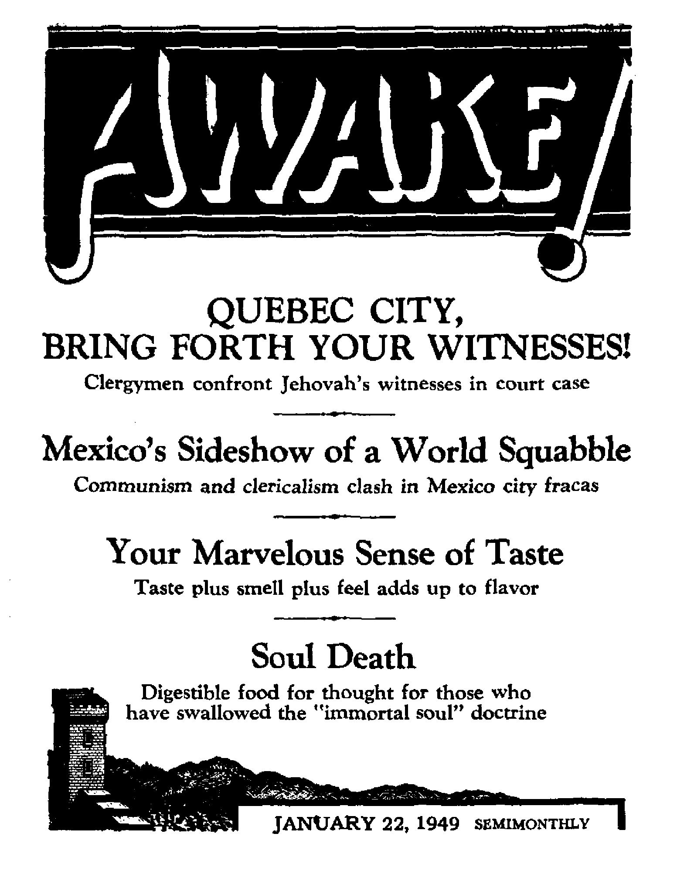
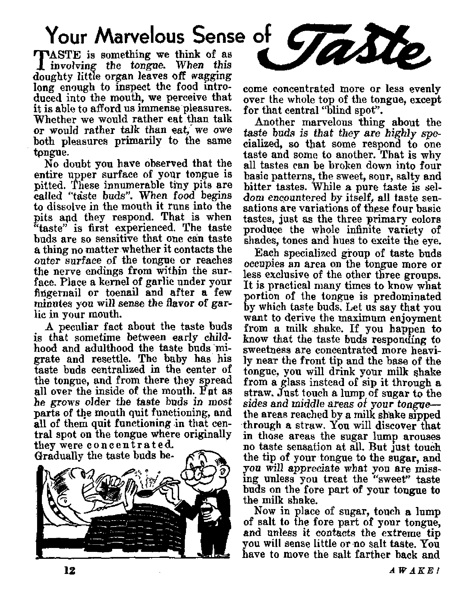
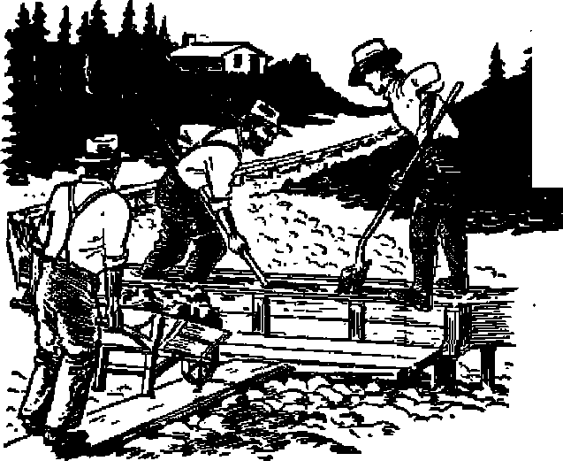

the mission op this journal
News tfources that are able to keep you awake to the vital issuer of our times must be unfettered by censorship and selfish interests. “Awake 1” has no fetters. It recognizes facts, faces facts, is free to publish facts. It is not bound by political ambitions or obligations; it is unhampered by advertisers whose toes must not be tread upon; It is unprejudiced by traditional creeds. This journal keeps Itself free that it may speak freely to you. But it does not abuse its freedom. It maintains integrity io truth. ■■ '
“Awake 1” uses the regular news channels, but Is not dependent on them. Its own correspondents are on all continents, in scores of nations. From the four comers of the earth their uncensored, on-the-scenes reports come to you through these columns. This Journal a viewpoint Is not narrow* but is international. It is read in many nations, in many languages* by persons of all ages. Through its pages many fields of knowledge pass in review—government, commerce, religion, history, geography, science* social conditions, natural wonders—why, its cover* age is as broad as the earth and as high as the heavens.
“Awake 1” pledges itself to righteous principles, to exposing hidden foes and subtle dangers, to championing freedom for all, to comforting mourners and strengthening those disheartened by the failures of a delinquent world, reflecting sure hope for the establishment of a righteous New World.
Get acquainted with “Awake!” Keep awake by reading “Awake/"
Published Semimonthly Bt WATCHTOWER BIBLE AND T&ACT SOCIETr, INC.
117 Adams Street Brooklyn 1, N. Y.t U. S. A.
N. IL Knorr, President Grant Suiter, Secretary
Five cant* a copy One dollar a year
BtMltttnt* *honld be mt to offlw In war country in etnuplliDCe with regulations to BUMmabee sale dellTery of money- Romlttancea »re accepted at Brooklyn from cwmtrta where no office is located, by internatioul money order only. Subscription rates Id different countries are We stated In local currency; it , t
N4ttH of «xplr*t|(ffl (with renewal Nack) 1* gent at Jeut two IttiMS before ubflcrlptUn expire*.
CfiMR of irttas when neat to car aSkx tz>ap i» mpocUrd effadiie within one month, fiend your did M well m oe* addftee.
Offices . Teerly fiuburlptlon Bate
Amrita, UA, Ilf Adama 0L, Brooklyn 1, N. I. *1 Allrtralin, ? Beresford Rd., fitrithfleld, fl.g.W. fie Canada, io Irwin Aw., Toronto 5, Ontario 11 EMlnnn, 84 Craren Terrace, Lotxfoit, IF, J £w Boat* Atrtea. 623 Boston House, Cape Town fia
Entered m asomd-diw mtt® at Brooklyn, Jf. T.t Art of March 8, 1879. Printed In U. & A.
CONTENTS
Quebec City, Bring Forth Your Witnesses! No Freedom of Worship in Quebec City Quebec’s “Holy Trinity” of Experts “Rabbi” and Un protesting “Protestant” Some of the Public Response
Human Folly
Mexico^ Sideshow of a World Squabble Enter the Archbishop
Enter Violence
Concentration Camps in America 7
Your Marvelous Sense of Taste Practical Use of Flavor Knowledge
3
4
5
6
7
8
9
10
10
11
12
15
World-weary Yearn for Island Paradise Beaver Paratroopers The Resurrection Plants
Other “Dead” Plants That Come to life
A Few Facts on Smoking
Along Alaskan Gold Trails
Alaska Gold Rush
Prospector Procedure
“Thy Word Is Truth”
Soul Death
Women Clergy in the Danish State Church Watching the World
^ffNow it is high time to awake.— Romans 13:11 9j
i >j i i ■■ i_. .. _ _ .. r~ ~ — — i— ... I.-. i jh
Vc/um« XXX 6roekfjrn( N. Y., January 22, 1049 Numftarf
Quebec City, Bring Forth Your Witnesses!
JEHOVAH is a God of trath, but He does not fear error. What is the chaff to the wheat? Will not fiery Bible truth consume the ehaff? And what is the rock to the hammer? When the hammer of truth cracks down on stumbling-stones, will they not crumble away? The hailstones of truth will sweep away the refuge of lies. There are no hidden errors that will not be exposed, no dark deeds that light will not make manifest Hence Jehovah God fearlessly ‘ says, Let the false priests and prophets go ahead and prophesy, and let those that have My word speak My word faithfully.—Jeremiah 23:25-29. .
So be it Jehovah’s witnesses know that organized religion teaches doctrine that is rooted in human tradition and paganism, that conflicts with the Bible, that blinds eyes and deafens ears to truth, and that by blacking out these windows to the mind organized religion has left the people in the dark as to God’s Word. Nevertheless, God says to let them babble their blasphemies, for His truth like a hammer will powder them, and His Word like a fire will burn them to ashes. Christ Jesus said it is the workers of evil that love darkness and hate light. (John 3:19-21) Hence Jehovah's witnesses seek to suppress no speaker, but let all word and doctrine stand or fall in the purging fires of public discussion. They abide by Jehovah’s decree of free speech, as stated at Isaiah 43:8-12:
f<Bring forth the people that are blind, yet have eyes, and are deaf, yet have ears! All the nations are gathered to-gethervand the peoples are assembled; yet who among them could foretell this, could announce it to us beforehand? Let them bring their witnesses to prove them in the right, to hear their plea, and say, Tt is true? ” [An American Translation) After thus inviting error to produce its witnesses, Jehovah God calls notice to the ones He will put on the stand to represent Him t “Ye are my witnesses, saith Jehovah, and my servant whom I have chosen; that ye may know and believe me, and understand that I am he: before me there was no God formed, neither shall there be after me. I, even I, am Jehovah ; and besides me there is no saviour. I have declared, and I have saved, and I have showed; and there was no strange god among you: therefore ye are my witnesses, saith Jehovah, and I am God?’—American Standard Version,
Such free speech is practical. In these turbulent day£ when truth and error spring like grass side by side, how is a separation to be made except by scrutiny of both I Truth need have no fear; only error need tremble and oppose the examination. Only error does. Posing in the garb of truth, frightened error screams that truth is false and should be denied freedom to circulate, should be suppressed. Error does not wish to fering forth its witnesses; not when they must face cross-examination by truth. Generally, organized religion does not want to do it. Particularly, the Boman Catholic Hierarchy does not want to do it. More specifically, Catholicism in Quebec City does not wish to do it. But she did. She maneuvered herself into that embarrassment. Here is how it happened.
No Freedom of Worship in Quebec City
Quebec City is overwhelmingly Catholic. Though in lands where the Catholic Church is a minority she of necessity tolerates freedom of worship, in areas where she is a powerful majority she casts aside this galling toleration of freedom. Hence at her hands the small group of Jehovah’s witnesses in Quebec City has suffered much persecution and imprisonment. One instrument of suppression has been a 'piece of mischief framed by law’, a by-law that prohibits circulation of printed matter without police permission. (Psalm 94; 20) This law allows the police chief to censor literature or forbid its distribution, though it merely he Bible instruction. Now one of Jehovah’s witnesses, Damase .Daviau, has challenged this ordinance on the ground that it contravenes freedom of speech and religion, and is seeking a permanent-injunction against the city to prevent the city authorities from interfering with Jehovah’s witnesses’ freedom of worship.
The case of Daviau against the City of Quebec and the Province of Quebec was called for trial before the Superior Court in Quebec City on November la, 1948, before Justice Leon Casgrain. Attorney for Daviau was Sam S. Bard, but the vice-president of the Watchtower Bible and Tract Society, Ine., and legal counsel for the Society, Hayden C. Covington, was present to direct court tactics. Mr. Covington took the stand.
For half a day he gave testimony under direct examination. He outlined the history and structure of the organization of Jehovah’s witnesses, the methods employed by them in training and preparing themselves as ministers, their ordination, their methods of preaching and reasons therefor, and the missionary nature of the Society. Thence he summarized the outstanding doctrines taught by Jehovah’s witnesses, climaxing with the most important one, the kingdom of God. The more recent literature of the Society was introduced in evidence.
Then began cross-examination, conducted by the city attorney for Quebec City, Ernest Godbout. He was assisted by the solicitor general, Noel Dorion, the chief counsel in the courts of the province for Attorney General Duplessis. It was evident that the city attorney, with the aid of the Catholic priest, had carefully examined the doctrines and books of Jehovah’s witnesses. He was not content to stop with the resume given M Mr. Covington on direct examination. He introduced in evidence many additional publications of the Society, among which was that little leaflet that has gen erated so much heat in Quebec, entitlec “Quebec’s Burning Hate for God am Christ and Freedom”.
Organized Religion Exposed
Early in cross-examination the cit attorney waded into the controversy doctrines. He produced the book Ene mies. Did Mr. Covington agree with it identification of the Roman Catholi Hierarchy as a part of the whore o Revelation? Yes; the Bible uses wome to symbolize organizations. The Catholi Church has relations with this world, i entangled in fEs wars and politics an commerce, is therefore guilty of spiri ual adultery, according to Janies 4:4 hence is fittingly embraced in the syn holism of a whore. Even Webster’s m abridged dictionary lists the Roma Cathoiic Church as one of the definitioi of “whore”.
Do you think it right to circulate sue doctrine in a province where the peop are 95 percent to 100 percent Cathoiu Yes, the witness thought so. Bible tru' affects the life prospects of all men, its presentation is most vital. If the Roman Catholic Church told the truth she would not object to having her teachings meet the test of discussion. Emphasis was placed on the fact that these adverse judgments of Catholicism were God’s Judgments, that Jehovah’s witnesses only declared them in obedience to His command.
The cross-examination bore down relentlessly with its contention that Jehovah’s witnesses were not a religious organization, hence freedom of worship was not here involved. The witness shelved the Bible distinction between religious formalism and Christianity. The Jews were warned about religion; Jesus denounced the religious scribes and Pharisees, their ceremony and tradition that voided God’s Word (Matthew 15:1-9; chapter 23); Paul said other religionists worshiped the demons. Today organized religion has been, snared by ceremony, formalism, lip-service and traditions that conflict with the Bible.- ■ Still, when legislation speaks of religion and religious liberty it is not concerning itself with distinctions within that broad field, and certainly it does not mean to exclude Christianity. It is guaranteeing freedom for all inodes of worship. The Scriptures draw1 finer lines of definition on religion and Christianity than do dictionaries and laws. Within the legal meaning of the term "religion” comes the work of Jehovah’s witnesses.
Since you say the Devil is the ruler of this present world, do you think this court is of the Devil? That does not necessarily follow. When men have laws that are in harmony with God’s law, or do not conflict with God’s law, they should be obeyed; and'courts that seek to insure justice according to these laws serve a good purpose. Jesus said to render unto Caesar the things that are Caesar’s, and unto God the things that are God’s. Obeying worldly laws that preserve order and provide for the
necessary oversight to prevent anarchy is a part of rendering to Caesar that which is his; but when laws of men would prevent us from rendering unto God that which is His, then we must follow the apostles’ decision: "We ought to obey God rather than men.”—Acts 5:29; 4:19.
Quebec's "Boly Trinity" of Experts
'Space forbids further recounting of the cross-examination, but it took a full day to complete. After Witness Duncombe testified on the local organization in Quebec City and Witness Daviau told of his ministerial activity in that territory, Mr. Godbont began the city’s defense. It was reported that the city’s attorney had spent about $3,000 of the city’s money in getting into book form "expert evidence” from a "trinity” of clergymen, Catholic, Protestant and Jew, that became as one to expose Jehovah’s witnesses. But the work and money went down the drain when the judge would not admit the book as evidence. These "expert witnesses” sought to inject their error into the court record by means of this book, and thereby escape any embarrassing cross-examination. Quebec did not wish to have to bring them forth as witnesses, but the judge’s action of not admitting the book forced the city’s hand. But even admitting them as "expert witnesses” was illegal, for such prejudiced clergymen -had no right on the stand to judge Jehovah’s witnesses and babble their opinions.
First "expert” on the stand was "Father” Herve Gagne, French Catholic priest. He condemned the Witnesses, outlawed them, found them beyond the commonly accepted definition of religion, said that preaching from door to door or in homes was not an act of religion, nor was distribution of printed sermons or preaching from a pulpit. He was effeminate in his attitude, insulted oyer the pictures in the Society’s publications, and when given free rein "took off
fajtq the stratosphere” of philosophy and prattled about "inner man” and "outer man”, “inner religion” and “external religion”, and after one such "take-off” flew on for forty-five minutes into these flimsy abstractions till even those who understood French could not understand him. Judge and lawyers looked blank, and finally' the judge mercifully ended the flight by asking the city attorney to ask another question. He showed abysmal ignorance of the Bible, said he could not discuss the Bible since he was only a priest and not of the Hierarchy of the Catholic Church. But he did contend that a Christian should comply with all laws of the land, even those that conflicted with God's law. What would the "Father” do if the civil law forbade the celebration of mass? That was the question under which he squirmed when court adjournment, for the day rescued him.
“Rabbi” and Unprotesting "Protestant
The completion of the testimony of the Catholic priest did not resume the nqxt day, but in his stead the city put on its next member of the “trinity” of “experts”, a Jesuit-trained “Rabbi”. He loved everyone, all religions, and would criticize none. He unctiously swayed and dipped his corpulent body in the witness box, playing as much to the spectators as for the judge. He did say freedom of religion stopped when it was used to criticize other religions. Then on crossexamination he got all fouled up. He could not criticize the Witnesses because he did think they were religious, and he had said he would not criticize anyone because of his religion. He admitted Jehovah's witnesses were religious and their books religious. He had to read scriptures from the books of Isaiah, Jeremiah and Ezekiel wherein they criticized and condemned religious practices. When he finished he backed and scraped his way out of the courtroom, and that was the last seen of “Rabbi” Solomon Frank.
After the “extinguished” rabbi came the “Very Reverend” Kenneth Fvaris, loaded down with high-sounding titles and docility, at first. He said Jehovah's witnesses were religious and had a right to do the work they were doing, and on the fifteen or twenty questions put to him did not hurt the Witnesses' case bub only impeached the priest and rabbi in everything they had said to hurt the Witnesses.
But upon his return to the stand the next morning he showed evidences of being diligently coached to be a better witness for the city. He condemned the Witnesses, specially the doctrines exposing the Catholic Church and the leaflet Quebec's Burning Hate. He did not even want to look at the literature, and his excitement reached such a pitch that he was suddenly asked if merely reading the literature would incite him to do violence. Throwing his hysteria into reverse he replied slowly and quietly, “Why, I am a very mild and peaceful man,” But the affectation was so obvious the entire courtroom burst into laughter, including judge and lawyers.
Before he got off the stand this Anglican had to read Jesus' scathing denunciation of religious hypocrisy, at Matthew 23, and Isaiah 56:10,11, where religious clergy are called “dumb dogs”. He did not object to that language by Jesus and Isaiah,* hence if the contents of Quebec's Burning Hate were true would he object to it.1 Only a threat of holding him for contempt of court made him answer, that assuming the contents to be true it was proper to print and distribute it. He was glad to leave the stand.
The Catholic priest resumed the testimony previously interrupted. He still had to answer what he would do when the civil authorities forbade mass. Would he obey worldly authority or do God's service as he saw it? He refused to answer. A motion for contempt of court was made, with an alternative motion that he be forced to answer. The judge
ruled he should answer. The priest said the Church would not oblige him to say mass in defiance; of civil authority. But the biggest snare for this philosophywise, Bible-ignorant priest was his claim that the Catholic priest was mediator between God and man. When he was confronted with the Bible text, “There is one God, and one mediator between God and men, the man Christ Jesus,” he had to admit the priest was not the mediator. (1 Timothy 2:5) At this point the case was adjourned until January 24, 1949.
Some of the Public Response
Quebec brought forth its witnesses, “experts,” no less. But these witnesses brought forth could not provfe Quebec City in the right, could not make the listening persons in the courtroom say, “It is true." After hearing the Lord’s witnesses that He had there to testify, many thought they were proved right The case started in a small courtroom, but ended in the largest one, with never nfore than standing room. The newspapers of Quebec City gave the trial much space. Incidentally, one newspaper clipping from New York that proved a conspiracy between the police and the Catholic priest was received in evidence. Regardless of the outcome of the case, the Lord has used it to give a tremendous testimony to His name and people in Quebec City. It attracted public notice.
Feel with us the public pulse as it beat at the trial. One of Jehovah's witnesses got in a taxicab and remarked, “I’ve been attending the trial this morning.” Forthwith the driver pulled over to the curb, switched off his motor, and parked for an hour and a half while the Witness explained the truth. Another taxi driver attended the trial, and remarked afterward: “I’m going to be one of Jehovah’s witnesses.”
In court, after Mr, Covington had finished his testimony, a court attache came over quickly and whispered: “You have told us things we have never heard JANUARY 22,1949
in our life, and we are glad to hear them. You have more friends here than you realize,”
During the trial the Catholic bishop came in and sat among his French parishioners. He saw one Frenchman write on a piece of paper, “What is religion?” and another in answer merely write, This bishop saw in the courtroom two little girls who were related to some friends of his. He asked them, “What have you come here for, to be converted?” Their short reply was, 'Wes; we have and we are,”
A stranger walked up to a graduate of the Watchtower Bible School of Gilead while in the courthouse and invited the Witness to his home. Ten Catholics were there. The priest came in the middle of the Bible discussion. The Witness and the priest discussed the Scriptures, and after several hours of discussion and much embarrassment for the priest when he could not Scripturally answer, the priest asserted, “Well, the Catholic Church is the preserver and interpreter of the Bible.” Thereupon the householder who arranged for the meeting turned on him, “When have you ever taught us the Bible!” He asked the others present, “Has he taught you?” All present answered No; and the priest retreated.
The company of Jehovah’s witnesses in Quebec City has taken fresh courage, and boldly witnesses now. They had many Bible studies going in and around the courthouse during the trial. They have many new back-calls in their file to be cared for. One afternoon a crowd of strangers were arguing outside the courthouse, vehemently. The question was whether or not the Catholic Hierarchy was the whore of Revelation!
When the trial in Quebec City is resumed on January 22 and “Father” Gagne again takes the witness stand, Awake! will have a correspondent there to give a report to its readers. Perhaps by then “Father” Gagne will have read the Bible.
Human Folly
Dispensing justice is a complicated process today. Ask any lawyer as lie wades through the hundreds of law books that stand as paper bricks of his library walls. But a thousand years ago justice was simple, and by simple we mean foolish, silly, senseless. And cruel. Trial was by ordeal. For instance, there was the t'ordeal of the cross*'. The accused and accuser were stood before a cross and told to stand still. The first to move his feet or fall over was guilty of lying. In another ordeal bread blessed by a priest was given along with cheese tb the accused. He was ordered to eat both quickly. If he choked on it as he tried to swallow, he was guilty. Then there was the test where a stone was placed in boiling water. The prisoner plunged his I are hand in and snatched up the stone. If his hand was Raided, he was guilty. There were many other trials by ordeal, such as carrying a piece of red-hot iron in the hand for * distance of several feet. If any marks remained on the burned hand three days later, the 9O0T *goose was cooked”
cise definition of “snail’s pace”.
It
es sometimes gobble up space at
a
treadmill and run him can beat the snail or
is 000363005 m.p.h. Lightning flash-a rate of 133,200,000 m.p.h. Now
who will put some scientist on week, so we will know whether
ragged for a the lightning?
£ Do you know what you are talking about when you berate some easygoing, slow-coming character as traveling at a snail’s pace? Now it can be told, in precise terms. An automobile manufacturer reports that scientists have kept a snail moving on a treadmill for a whole day. Result: pre-

sweet home, from cradle to; graven
Soon Hollywood cars will be home,
Out in Movieland they have drive-in restaurants, laundries, florists, clock shops, liquor stores, movies, and drive-in banks equipped with tear gas for drive-in bandits. Even some of the cars have built-in beds for the drivers to dive-in. But inconsiderate barber shops, dime stores, grocery stores, and a handful of other old-fashioned progress-blockers, are only semidrive-ins. Would you believe it?—you actually have to walk half a dozen steps! Next some zany evolutionist will say that soon Holly woo deans will be born without legs.

Out of England comes a spanking tale. Headmaster of Horsley Hall school invited Brio A. Wildman, president of the National Society for the Retention of Corporal Punishment in Schools and a cane manufacturer, to lecture to the pupils on corporal punishment. This school has free expression but no corporal punishment. At least, not till then. But Mr. Wildman bumped into both. During his talk he swished some of his twenty assorted canes and proclaimed, “The most reasonable punishment is six of the best,” Before the echo died out he was pinned to the floor by the pupils and held there while one husky lad treated his buttocks to seven strokes of his own medicine, with one of hie own canes. Mr. Wildman lived up to his name as he raved, “I’m going back to London to see my lawyers!” But why the furor? He favors corporal punishment—-and got it. The pupils erave free expression—and indn/gvd it. They were good listeners, even practicing wThat he preached. Wildman can speak from practical experience on the effectiveness of corporal punishment in general and his canes in particular. And he will remember the well-known principle, to wit, worms will turn occasionally.
JU SI DES HO IV
WORLD SQUABBL.K
OFTEN the great political situations . of the world have their echoes in minor situations throughout the earth. That is the case with what occurred this past June in Mexico city. The incident has to do with people that have little love for each other, the.Communists and the Catholics.
It all started out very inconspicuously in a new hotel, Hotel del Prado, claimed to be one of the most beautiful in the world, with hundreds of spacious rooms, large dining room, swimming pool, theater, stores, all within the hotel. They claim that the hotel is so complete that a person could live there without ever leaving it. Hotel del Prado is built on the wide and beautiful Avenida Juarez, facing the park, La Alameda Central. Without a doubt,' the hotel was built to attract the thousands of American tourists that yearly pour into Mexico a gold mine of dollars.
About four years ago the construction of the building was started, and shortly afterward the architect and director of the project, Carlos Obregon Santaeilia, solicited the services of the world-famous Mexican muralist, Diego Rivera, the Communist millionaire, to paint a large mural in the spacious dining room. Rivera, the 62-year-old artist born in Guanajuato, Mexico, “early in his career . . . became a Communist,” according to the World Book Encyclopedia. The En~
* cyclopedia continues by saying that his favorite subjects are r A revolutionary and labor ques-I tions. And his last mural in
Hotel del Prado practically cansed a minor revolution in vL/ Mexico.
Rivera, when first contracted to do the job, made a small ^4 drawing of the mural he was to k paint in the new hotel. It was to be a scene of the park La Ala-\ meda Central, across from the hotel, showing a water fountain and a number of men and women of the nineteenth century walking through the park. About a year ago Diego Rivera started his project, and it was not long before people started to notice that his work was not just a general park scene, but a mural showing Benito Juarez, Cortes, Ignacio Ramirez and other people famous in Mexican history, mixed in with some fruit peddlers, a^few witches and a pickpocket. Juarez has in his hands a copy of the Mexican Constitution while standing in front of him is the famous Mexican teacher and writer of the nineteenth century, Ignacio Ramirez.
Ignacio'Ramirez, also born in Guanajuato, Mexico, was as much a radical in his day as Diego Rivera is at the present time. Ramirez, known as the “Necromancer” in the literary world, is also represented in the mural as holding a script in his hands-which contains the sentence legible to all that caused such an uproar a few months ago in Catholic Mexico. The sentence reads, “God does not exist.” Ramirez himself first wrote the sentence in his time.
Luis Osio, the manager of the hotel, noted the sentence in Rivera's mural and, realizing that it might cause trouble, asked Rivera to remove the historical quotation, Osio probably remembered the trouble Rivera caused a few years ago with one of his murals in
Hotel Reforma. Rivera promised to remove it. But he never did keep his promise-
Enter the Archbishop
Then, as is the custom in the Catholic world of blessing bridges (remember Pacelli, now pope Pius XII, blessed the Oakland-Bay Bridge at its inauguration), wars, buildings, and any other object, the directors of the hotel asked the archbishop of Mexico, Luis B. Martinez, to bless the. new hotel. The archbishop readily accepted the offer. In touring the large hotel he noted in the dining room Rivera's mural and the disturbing words of the “Necromancer”, “God does not exist.” The archbishop stopped there and then and stated that he “could npt bless a building which contained a phrase denying the existence of God”. {El Universal; June 2, 1948)
This exploded in Mexico the incident which ended up in a Catholic newspaper attack against the Communists, In two days every newspaper and radio station in Mexico were blasting out their hate against Rivera and the Communist party he belongs to, the PP, or Partido Popular (Popular Party). Some of the headlines were quite interesting. One reads: "All the Catholic World Against the ‘Monkey PainteP.” (La Prensa, June 3, 1948)
The fight continues, Rivera refuses to erase the disturbing statement, and the archbishop refuses to bless the hotel as long as Rivera’s mural contains the disputed sentence. Later Rivera proposed a solution to the problem to the managers of the Hotel del Prado. Hig solution is that Archbishop Martinez bless the building with the exception of the disputed mural, upon the which, says Rivera, he could put a cursing. (La Prensat June 2,1948)
the subject of Hotel del Prado was causing more excitement in Mexico than all the trouble in Europe. Then in a number of cities throughout Mexico appeared the sentence, “God does exist/* written on the walls of homes and bund ings. On June 3 La Prensa carried statements of the public in general concerning the topic, and one says, “If it were in my power to punish Biego Rivera I would slowly torture him to death so that he would realize how to love God.” What a strange way to manifest one's lovd for God! The Inquisitionists once showed their religious zeal by means of torture, but Mexico is no longer in the hands of the Catholic Inquisitionists, So Rivera was not tortured to death.
Enter Violence
Since no one would compromise in the situation, violence was finally resorted to. By this time the hotel was under guard. On the afternoon of June 5 about 100 Catholic college students entered he hotel in groups of two and three so that their plans would not be thwarted. At a given signal, the entire group rushed into the dining room with knives in their hands and in a few minutes scraped away the words “does not exist* leaving only the word “God” on the mural.
Mexico greatly rejoiced when it heard that the atheistic sentence had been erased. But the incident did not fend there. The original fight of Rivera and the archbishop continues. That very same evening at midnight Diego Rivera and another Communist muralist David Siquieros, leading a mob of about 150 people, forced their way into the dining room and there Rivera nervously penciled in the sentence “God does not exist”; after which Rivera and Siquieros each gave a short talk to the mob and then departed.
Now the situation really became tense. No one knew how it would turn out. Secretly some person erased the sentence the second time. But then the whole incident stopped as suddenly as it started, when the government started to investigate the matter and prohibited
Diego Rivera from rewriting the sentence. The hotel managers then covered the troublesome mural with a curtain and moved its dining room to another part of the building.
In the incident of the archbishop of Mexico versus the Communist Rivera neither side won, because up until* the present time the building has not received the archbishopJs blessing, even though it seems that that has not affected the prosperity of the new hotel, and the mural cannot be seen "by the public.
El Universal of June 4 showed how Diego Rivera used all the publicity he gained to attempt to enlarge the Communistic Sock in Mexico. At a Communist meeting which took place during the heat of the battle Siquieros stated that “the Communists were ready to fight and back up Diego Rivera". Then Rivera spoke and “repeated some of his usual phrases against imperialism, the hotel managers, Franco, etc., and, after praising Soviet Russia, he invited all those present to join the Communist Party", or the Popular Party, as it is known throughout Mexico.
It is too* bad the archbishop of Mexico goes about “blessing” hotels, and straining at a gnat, while he and the rest of the Mexican hierarchy continue to keep the millions of Mexican Catholics in ignorance of the God in whom they claim to believe. As for Diego Rivera, the God he claims does not exist, Jehovah, puts people like Jiim in a class by themselves by stating, in Psalm 14:1: “The fool hath said in his heart, There is no God." —Awake! correspondent in Mexico.
Concentration Camps in America?
*3? Walter Winchell charged that the “Hopley Report, sponsored by Secretary Forrestal, waa a greater attack the liberty every than ever dreamed, of by Hitler
or Stalin”, After saying this over the radio, Winchell wrote in his column a few days later (New York Daily Mirror, November 26, 1948) that on page 39 the Hopley Report suspends the Bill of Rights. On the subject of detention the report recommends: “The problem of detention is one of considerable magnitude during emergency conditions. It should be met by providing suitable, safe and secure places where persons may be detained for the public good until such time as conditions permit their release or circumstances warrant their trial. Places of detention should be provided to accommodate such persons temporarily deprived of their liberty.”
Walter Winehell logically reasons that the words “considerable magnitude” mean many are to be arrested. Also, this would allow you to be detained when they think it would be for public good, until they think conditions permit your release, until they think they have enough evidence to warrant giving you a trial. It provides for concentration camps now to hold you when you are temporarily deprived of your liberty. It provides for detention of persons “for the public protection”, when the Defense Department decides the public needs to be protected from you. No charges. No trial. “Heil Hopley!” adds Winchell, with more sarcasm than enthusiasm. He ably argues that the Hopley Report would open the way for crushing American labor, for demanding loyalty oaths, for depriving the common people of political opinions. He also quotes FonestaPe expressed desire that the Secretary of Defense “hire” the Secretaries of Army, Navy and Air. In other words, the president would no longer choose these cabinet members. Winchell says Forrestal would fire Truman as commander-in-chief.

A—Jentitive to taste* B—S*veett salty and aour C—S*Uy and aour Q-^-S<nir only
£»In>enaitiYe to all taite* F—Sweet and soar
G—Bitter, sweet and sour
along the sides to the very place where sugar roused no response, and there you find the taste buds that respond to salty tastes.
The farther back across the tongue you move a sour pickle, the more obvious its sour taste becomes. While the "sour” taste buds may be more evenly distributed over the tongue than any other of the taste perceptors, yet there is a .spot just back of the tongue's “blind spot” that registers no other taste than sour.
Bitterness is tasted best even farther back at the base of the tongue. A sprinkling of “bitter” taste buds occurs at the tip of the tongue, intermingled with the "sweet”, “sour,” and “salty” buds. From the diagram above it can be seen that all four types of the ingenious little taste perceptors are present at the extreme tip and extreme base of the tongue; hence from the instant food enters the mouth until the instant it is swallowed, its taste can be detected.
Temperature Affects Taste
But just -as speech is not. an exclusive product of the tongue, likewise taste depends to some degree upon other factors. In other words, there is more to taste than what meets the taste buds. Some foods affect not only the taste buds but other nerve endings in the mouth. Among these are the "hot” and spicy foods such as mustard and ginger, which set the nerve endings that respond to heat telegraphing their messages to the brain. These foods, for all physical
JANUAUl 22,1949
purposes, cause the same reaction in the mouth as does something hot They are not giving off a taste so much as they are creating a kind of physical pain in the mouth. When we think we are tasting hot pepper we are more literally smarting from the pain it causes upon the nerve endings that respond to heat
Foods that are actually hot register a different degree of taste than when they are cold. Warmth stimulates the taste buds, makes them quicker to respond. Hence, a factor that helps determine taste, a factor outside the taste buds themselves, is heat. People who are more concerned about the pleasure of taste than about their physical welfare indulge in eating and drinking foods that are too hot for health's sake. When the taste senators are abused by overheating they are unable to register any taste at all.
No less vital than the riieat” nerves are the "cold” nerves which contribute their share toward modifying the sense of taste. While warmth stimulates the taste buds, cold cuts down their sensitivity. If the doctor obliges you to take a violently bitter medicine, first rub an ice cube back and forth over your tongue until the tongue feels numb. Then take your medicine. It will not taste so bitter. You have chilled the taste buds.
The power of cold to subdue the taste buds may in some cases produce advantages. Some wines taste better cold, because chilling masks their less palatable qualities; the advantage, or disadvantage, in this lies with the user. The hostess who has niade a dessert too sweet
13
uan solve the problem by serving it cold, because the colder it gets the fess apparent will be the sweet flavor Ou the other hand, if she desires a sweeter-tast-ing dessert, she can serve it warm, because the wanner it gets the more apparent will be the sweet flavor.
Feeling and Smelling a Taste
Does it strike you as odd that some tastes have to be felt and smelled! Yet consider for a moment how great a role the sense of touch plays in creating no end of taste impressions. Crackers are worse than tasteless and unsavory unless they are crisp and crunchy. Who cares how good the flavor of a steak is unless the meat it Self is reasonably tender! If you are one of those persons who think raw oysters are horrible, it probably is not the flavor you object to at all, but the "slimy" feel of raw oysters th the mouth. The biting or burning avor of spices, the coolness of j>eppor-mint flavor, the tickle of soda-water bubbles—all these are obviously flavor elements. Yet none of their can be tasted or even smelled. They have to be felt. While some might argue that the physical “feel” of a food has nothing actually to do with its taste, yet who will say that the touch sense does not greatly influence the Ekes and dislikes of all of us when it comes to taste preferences!
As for the role that smell plays, you can demonst raie for yourself by merely holding your nose while eating, that a great host of foods, such as fruits, coffee and butter, depend more upon their odor than upon the taste buds to convey their true flavor. Odor is sensed just as readily from the mouth as from the nose. There is a rear entrance through the throat into the smelling apparatus in the head. Every time we swallow, some of the air which has passed over the food in the mouth rises into the smelling area.
Up there, in the upper part of the nasal cavity, is an area about the size of a postage stamp, containing a group of highly specialised nerve endings called the olfactory cells, From each of the tiny olfactory cells six to eight small ifhairs” protrude beyond the mucous layer. They pick up the odor sensations and carry them through the olfactory nerve to the lobes, which gather all the impressions into one nerve response.
Below the olfactory cells "is another area of nerve fibers which are capable o' registering the tactile or "feel” components of flavor such as* the qualities of cold, heat, tickling, piquancy, etc. How these ingenious sense perceptors of smell co-operate with the sense of touch and the sense of taste to produce the complete and single sensation of a flavor is a marvel worth contemplating.
Think of a time when your nasal passages were stopped; then it seemed that just about everything you ate tasted alike, or, rather, everything alike seemed to have no taste at all. What you missed was, not the taste, but the odor of food. Shut your eyes, hold your nose, and let some one feed you some chopped apple and chopped onion; which one is which? Even strawberries taste much like onions provided you cannot inhale their f aroma while you eat. What we often mistake for a bad taste is in fact a bad odor, as in the case of cod liver oil. The senses of taste and smell co-operate so closely that we hardly know for sure whether we are smelling or tasting. Chloroform, for example, does not stimulate the “smell” sen si tors,' but rather the taste buds at the tip of the tongue. Although we think we are smelling chloroform in the air, we are actually tasting it
Flavor
By the wonderfully co-ordinated interplay of the faculties oT taste, smell and feel, all of them registering simultaneously in the brain, and their reactions further modified by the temperature of the food, a sensation is produced that is in reality more than "taste”. A word with a fuller meaning is "flavor”. Flavor k the combination of all the sensations produced in the mouth by food. Because the joy of eating is derived from the flavor, and because flavor cannot he confined within the narrow limits of a definition, a way is left open whereby even the senses of seeing and hearing can be played upon to further enhance the pleasure of eating. The restaurateur knows that the more delectably a dish is prepared the more palatable it will seem, even though his customer may not ordinarily like the dish. And if embraced in an atmosphere of soft lights and the melody of music, the menu becomes all the more irresistible.
Equipped with a refined knowledge of the factors that produce the sensations of flavor, the food processor, the chef, the baker, the restaurateur and the hostess have conspired to create a world of ersatz flavor thrills that seduce the appetite but fail to produce sound health. For example, the baker strives to produce a loaf with a pleasing taste plus a texture having just the right "feel", a clean bite, and a tender crust These qualities are better combined when he uses lifeless “white" flour rather than nutritious whole-grain flour. What is overlooked is that the true tastiness of food should be influenced more by the physical soundness and healtljy appetite of the consumer, rather than by an appetite stimulated by artificially crunchy goodness and synthetic taste thrills.
Practical of Flavor Knowledge
When the meat-packer salts meat too heavily he tones it down by adding sugar, knowing that strong salt and sugar solutions applied to the tongue at the same time cancel each other. The taste-wise cook avoids serving a menu of too many flavors, which might cancel each other and leave the diners feeling that the meal, no matter how sumptuous, was somehow just not up to par. He builds the menu around one taste, so that a predominating flavor is enhanced by the others, the way one theme predominates a melody in music.
The housewife haying a knowledge of flavor patterns knows that a heavy concentration of one taste affects the reaction to the tastes that follow’. Brussels sprouts may be the family's delight, but if served after a sour food, like kraut, their flavor will seem tepid and dull. A cereal served after grapefruit tastes sweeter than if served after toast and jam. Coffee tastes sweeter before rather than after a swTeet dessert. The experienced hostess arranges the dishes in the order that permits the taste of one to enhance rather than neutralize the other.
Each, of the four basic tastes—sweet, sour, salty, bitter—has its distinctive role in the flavor pattern, and serves to make the most ordinary food taste better if skillfully employed. Bitterness, most people’s notions to the contrary, is the most exciting to the appetite. The old folks of a past generation didn't drink their “bitters" before meals just for the sake of the alcohol in them.
Just as bitterness is the most exciting, sour is the most refreshing taste. A little lemon juice brings out the flavor of fish or spinach. Sour tastes are derived from food acids. There is lactic acid in milk, citric acid in oranges and lemons, acetic acid in vinegar, malic acid in apples, and the sourest of all common fruit acids is the tartaric acid in grapes.
When it comes to salty tastes, there is an equally wide variety.zln the Orient a chemical called glutamates is used to lend meat flavor to foods. Glutamates, labeled mon-sodium-glutamate by the chemists, is about seven tinjes as salty as table salt. The salty taste gives a sense of zestful, nourishing, satisfying completeness to a ineaL
And, of course, the favorite taste is the sweet. I: is relished more for the sake of its taste alone than ail the rest. Jr takes something sweet to add the crowning touch 10 the meal—not so much for the sake of the nourishment found in sweet foods, but for the pure joy of tasting sweetness.
Is the range of tastes that excites the senses less wide and varied than the shapes and colors that attract the eye end the sounds that entertain the ear? Truly the Creator has provided an illim
itable symphony of sensations to play upon the organs of sense, and in the coming Paradise of harmony and balance in the New World it will be delightsome to live and respond to perfection to ail that greets the senses, including the tingling joys to be derived from your marvelous sens© of taste.—Contributed.

<7cWd'U:ezjry Yearn for Island Paradise
<L An oatline of life on the Pacific isle of Samoa given before the United Nations so enchanted some who read the report that they asked, ‘What is the quickest way to get thereT The United States delegation painted Samoan Living as a blissful existence on breeze-swept islands, where everyone lived lazily off natural bounties, doctors sent no bills, and income taxes came to five dollars annually for adult males only. Ten percent of the inhabitants work for money; the others care nothing for it, as it is virtually a surplus commodity in a land where almost everything was available for the taking. Why, it was refreshing to hear that very few residents even thought enough of radio sets to own one. Upon hearing these alluring reports persons began writing to find out the quickest way io get there and to stay for good. The majority were sick of this human folly called “civilization”, where the money-mad and power-insane and socially vain claw and bite and fight to get atop the seething mass of restless humanity. But refugees bent on escaping the savagery of civilization struck a sn&g that scuttled their hopes. The United States government has ruled that practically no one-way passages would be permitted to the Polynesian "paradise of the Pacific”. This ehilling damper was put out reluctantly, it was stated, to preserve the simple, primitive beauty of Samoa-One official conceded that the best way for anyone wanting to live in Samoa was to marry a Samoan. Now the sixty-four-dollar question is; How to meet the Samoans in the first placet
^Beaver Paratroopers
<L Paratroopers are again “hitting the silk”, but this time they are not waging destructive war. They are fighting to convert arid, sparsely populated land into fertile, watered areas. And they are not mezz, but beavers, “Operation Bearor” is being carried out by the Idaho Fish and Game Department, The beaver is a valuable animal, though in some sections he is viewed as a pest. So in such sections the Fish and Game Department is shifting Beaver populations by trapping these forty-pound aquatic rodents, putting a pair of honeymooners in one box, attaching a parachute, flying them over some primitive wilds, and then—“Beavers away!” The box & designed to open automatically upon landing. Out waddle the two pioneers, without apparent surprise or damage, and head for the nearest stream. The DB'b (Displaced Beavers) have found a new home. The hope is that the parachuted beavers will multiply and increase the fertility of arid and unsettled land by building dams that will spread the small, spring-fed lakes. Within one week after the first beavers were dropped a new dam was sighted in the area. Success I Now they are “hitting the silk” regularly. And to date the only casualty has been one bloody nose!
THERE are m-any plants that have stamina enough to resist the cruel dryness of earth's desert wastelands. Among these, there are none more strange than those that shrivel up and apparently die when it becomes too dry, and then, when a little water reaches them, even if it is years later, they come to life again. “Sus tended animation” is what some people have called this dormant condition. In Asia, Africa and North and South America several nonrelated plants possessing this miraculous rejuvenating ability have been popularly named “resurrection” plants. Probably the most famous of these queer desert plants is the rose of Jericho found in Palestine, Arabia, Persia and Egypt. Sometimes in that arid land it can be found growing on the flat rooftops pf the houses. In reality the rose of Jericho is not a rose at all. It belongs to the order of C^uciferae, which has 175 genera and some 1,500 species, and which includes the cabbage, turnip, mustard, cress, radish and horseradish families. Naturalists give the “rose” the botanical name of Anastatica hierochuntica, which is probably the best explanation as to why everybody else calls it the rose of Jericho. The stem divides at the base into many branches that bear spikes of tiny white flowers that develop into round fruit or pods containing the seeds.
If a dry spell seems to kill the rose of Jericho when it is only partly grown it will again take on the appearance of life and begin to grow within a few hours after its roots are moistened. The buds ,swell, the leaves of the calyx open, the petals unfold, the flower stalk grows, and itill-bloom flowers appear,
Another remarkable thing about this little plant, which seldom grows more than six inches high, is the way it migrates from place to place. Instead of easting its seeds hither and thither when they are ripe, as other plants do, it has a very unique way all of its own. The leaves fall o^ and the branches fold inward to form a ball or basket containing the seed pods. Then when autumn winds start to blow the plant breaks off an the ground and rolls out to see the world. Eventually it will come to rest many miles from its home, usually in a low, hollow place where moisture is most likely to collect the following spring. Still holding its seeds it does not uncoil and open its pods until rain falls sufficient to assure germination of the next generation.
During the Dark Ages, when humanity sank to its lowest depths in ignorance and superstition, and when priestcraft rose to a high degree of deception, the rose of Jericho became a ready-made instrument in the tricky hands of the clergy, quacks and charlatans. These rascals gave the plant such names as “Rosa Mariae”, “Rose of the Virgin” and “Mary's Hand”, and then proceeded to spin a web of superstition around its extraordinary and peculiar characteristics. They told the credulous people of Europe that it grew only at the stopping stations along the trail taken by Mary and Joseph during their flight from Bethlehem to Egypt with the babe Jesus. Moreover, by the trickery of placing imported specimens in water just at the right time they convinced the ignorant people that it bloomed every year on the
vary day and at the very hour when Christ was supposed to have been horn.
Otiter “Dead” Plants That Come to Life
In the southwestern part of the United States, in the arid regions of Mexico and southward to Peru, other "resurrection plants” are to be found. Although they resemble the rose of Jericho in behavior and looks, botanically they belong to the family of club mosses of the genus 8elaginella> the most common being 8. Cdnvoluta, 8. lepidophylla and S\ lep-tophyllck These quaint plants, called by some people "bird's-nest moss” because of the nest-like ball of incurled branches that hold the seed pods, may be purchased in many curio shops throughout the country. When taken home and placed in a glass of water—Presto! In almost no time the dry and apparently lifeless roll begins to swell and turn green. The once gray stems unfold and become elegant, finely cut, fern-like bronze-green branches with purplish leaves radiating from a coiled central stem.
Africa too has many native drought-resisting and xerophilous plants. The Jf. irtpQliwn is designated as a “resurrection” plant Its more common name is fig marigold.
Rhodesia's Resurrection Plant
Visitors to the Rhodesias in Africa are familiar with still another “resurrection” plant that grows among the gray granite boulders of the Matopos Hills, among which is situated the famous 'World's View”. Belonging to the small genus of Myrothamnus, and called by-the botanist M. flabellifolius, this plant is a giant compared with the rose of Jericho. When “alive” and growing it reaches a height of two feet, but when “dead” (at least three-quarters of the year) it shrivels up and is only a dwarf.
It seems that the first European to come upon this Rhodesian resurrection plant was Frei Joao dos Santos, He describes his journey into the interior from Portuguese East Africa in his book Ethiopia Orientate, published in 1609, and undoubtedly he refers to Manica-land, the northern half of Southern Rhodesia, when he writes:
In the Kingdom of Maniea a small tree grows on the top of rocks and mountains which, for the greater part of the year, is bare and without leaf or verdure, but it has this strange property—that if a branch is cut off and thrown in water, in the space of twelve hours it buds and blossoms into green leaves, and when it is taken oi^t of the water it becomes as dry as ever. . , . This wood powdered and taken in water is a good remedy for dysentery.
The Portuguese in Portuguese Angola scent their houses with branches of the plant when they are green. This is because the shrub is balsamiferous, that is, one that produces balsam and has a strong aromatic scent. It is probably due to this fact that the natives believe it has curative powers over many diseases. Says Dr. Friedriek Welwitsch:
The natives in Pungo Andongo (Portuguese Angola) employ the shoots in the form of a cold or warm infusion to cure headaches, and in the form of fumigations in the treatment of rheumatic pains and sudden paraly« sis; also the Portuguese colonists hold in high esteem its medicinal virtues and keep its dried branches instead of incense to perfume their houses.
Of the endless variety in both design and function found in the vegetation that clothes this earth the resurrection plants truly stand out as most remarkable and unusual. In fact, one reverential worshiper of the Almighty Creator, in observing the handiwork of these plants^ exclaimed what a similarity there is between them and the people of this present evil world, who are dry and dead for lack of the life-giving waters of God’s truth! When people of good-will come in contact with the Kingdom truth and absorb it as the resurrection plant does Water, they quickly blossom forth in good works, praising the great Creator, Jehovah God.
TSE American people are smoking more cigarettes than ever before. The figures for 1947 run 7 percent ahead of 1946, The grand total comes to 327 billion cigarettes. That's more than 100 packages of 20 cigarettes for every man, woman, and child in the country; it's about 6 cigarettes (more than a.quarter of a pack) a day.
Doctors disagree on just how much harm we do our bodies when we smoke. There is no doubt that the smoke itself irritates some people's sinuses, as well as the membranes of the nose, mouth, throat and lun'gs. Other people are allergic to tobacco in any form. Smoking contracts the blood vessels. It reduces our ability to see far and clearly. It introduces carbon monoxide to the blood stream. It has bad effects on diabetics and sufferers from certain heart ailments. Alcohol, «n the other hand, makes the blood vessels expand. But this does not mean, as some optimists have asserted, that the bad effects of alcohol and tobacco cancel each other off. It takes alcohol an hour or an hour and a half to affect the blood vessels; so unless you are going to smoke a lot longer and drink a lot more than is good for you anyway, you won't repair the bad effects of smoking by having a drink and you won't repair the bad effects of having a drink by smoking. You will not find it hard to get through the first day without smoking. It's the first six weeks that give the real trouble. Eor it takes six weeks for the system to get rid of the past effects of tobacco and for the physical craving to subside. The nervous craving may, of course, last much longer; it never entirely departs. But on one point doctors and laymen agree. The best way to cut down smoking is to cut it out altogether. Perhaps the most annoying minor hardship from which thef British people now suffer is the high price of tobacco. With cigarettes selling at nearly seventy cents a package, not many people in the British Isles can smoke as much as they would like. Therefore they ration themselves and make each cigarette last to the bitter end, holding it on a pin. This may not be too healthy, because the last inch of the cigarette puts four or five times as much nicotine into the system as the first inch.
Most of the serious damage that tobacco can do comes from the nicotine it contains. As you probably know, nicotine has no color. That yellow stain that appears on the fingers of inveterate smokers is not nicotine, but tar. It may produce irritation, but .nothing worse. Just how much nicotine does, the doctors themselves do not know. Men, generally speaking, still smoke more than women, especially older men. And Dr. William H. Rienhoff, Jr., of Johns Hopkins, has recently compiled figures showing that cancer of the lungs kills six times as many men as it' kills women. This may not be the nicotine. It may not even be the smoking. We shall know more in another generation now that younger women are smoking about as much as men. This much, however, we do know: The infertility of rats inoculated with nicotine goes up from 17 percent, the normal figure, to 33 percent, and human beings are one or two hundred times more sensitive to nicotine than rats. But the effect of
tobacco on different individuals varies enormously. If you cut your cigarette consumption in two but inhale twice as much, you are no better off. Some people can get nicotine poisoning by smoking only one cigarette a day. Pipe smokers swallow a lot of nicotine, but smoking does not affect them in so many ways, or so seriously, as it affects cigarette smokers. Cigarette smoke may irritate the ends of the nerves in the upper windpipe. Pipe smokers often do not breathe their smoke deeply enough to have it reach any part of their breathing equipment; and that’s all to the good.
The late Dt. Raymond Pearl, of Johns Hopkins, showed. that heavy smokers have a shorter life-span than moderate smokers or nonsmokers. He could find no great difference between the life-spans of moderate smokers and non-smokers. In one field of research into the effects of tobacco on the human system, doctors have shown a timidity, a caution unworthy of the best traditions of their profession. Never has any med-, ical journal carried any comparative data on various brands of cigarette by name. For instance, three researchers at the Medical College of Virginia tried blowing the smoke of different kinds of tobacco, different blends, and different brands into the eyes of rabbits to find out which caused the most irritation. They found that they produced a wide variety of effects. But when it came to revealing what blends of tobacco went into various brands of cigarette and, when it came to comparing, which brand of cigarette smoke produced the most, and the least, irritation the researchers said nothing. They mentioned no brandnames at any point. This is surprising on several counts. Scientists customarily give full details about all their experiments. They tell what kinds of animals they use; they describe their equipment and the conditions under which they work. Nor is the scientist under any special obligation to the tobacco companies, Many of the magazines for which he writes run no general advertising. Is it fear of indirect pressure! But if such pressure do.es exist, surely one scientist would have defied that pressure at least once.
Getting back again to our Virginia researchers, they also found that tightly rolled cigarettes produced less irritation than loosely rolled cigarettes and that moist tobacco produced less irritation than dry tobacco. But again they did not reveal which cigarettes are the most tightly rolled or which' contain the greatest proportion of moisture. All they said was that each brand was standard and that the same brand always produced the same effect. From this experiment, the average smoker will conclude—what he already knows from his own experience—that the loosely rolled cigarette he makes for himself gives off a hotter smoke than the tightly rolled, machine-made cigarette. But for all he knows the tobacco in Bull Durham, for example, may be less irritating than the tobacco in Lucky Strike,
The various cigarette manufacturers make various claims in their advertising— based the preference of doctors on the proportion of irritants that they say their brands contain. If these claims are no more satisfying than the veiled findings of the doctors, perhaps the reason in both cases is that no one test can be applied to any one tobacco or cigarette. One may be more irritating; another may contain more nicotine. The effect of the same cigarette on different people may be quite different. What’s one man’s meat can be another man’s poison, as sufferers from allergies know all too well. Moreover, tobacco is big business here in the United States, and an important item in world trade. Its the chief cash crop of hundreds of thousands of our farmers. Why disturb the goose that lays so many golden eggs?—Quincy Howe broadcast on Frontiers of Science, December 16, 1947,

MAN’S thirst for the bounties of nature early drove him across the face of the globe, but the spurs on that ride have been his lust for the yellow metal called gold.
How true this has been of Alaska! At first furs were the bounty nature paid, and comparatively few hardy souls braved the rigors of the northern clime to wrest that wealth from the land. But when the cry changed to “Gold!” thousands, yes, scores of thousands wdre* spurred on, each in a mad dash to be an early arrival in the land where wealth for a lifetime of »ase could be won from a small plot of ground in a short season or two. As in Bible times when the gold of Ophir was more precious than the life of man, so the gold of Alaska was more precious than a human life. Many received death as their wages, either by trudging into the grip of winter ill-prepared or by' being foully murdered for the gold they had come to wrest from the earth.
Before we follow the trail of the Alaskan gold miners let us consider how gold occurs and is won from the earth. There are two broad divisions of gold-mining: placer and hard rock. As the surface of the earth eroded the heavy gold would lag behind like sand in the bottom of a washing machine on washday. Always balking at being moved and always seek-
ALONG ALASKANS
GOLD TRAILS J
ing the bottom of the creek bed the gold was concentrated over a period of many years. This has given rise to the first main division of mining—placer mining.
How did man recover this gold which the stream had so obligingly concentrated for him whether in Alaska or in Havi-lah (Genesis 2:11) ? By creating an artificial creek bottom of his own and running the material of the creek through it. His basic piece of equipment was and is a “pan”. Today an actual steel frying pan can be used, although special pans are made. Shoveling his pan full of gravel the miner loosens the mass with water and a peculiar shaking motion which settles the gold to the bottom. He slowly washes the barren material over the side and picks out the coarse worthless material bv hand.
This can be seen as very slow; so he enlarges his “creek bottom” by building a trough that can be rocked back and forth. The gold can be caught between slats in the bottom and the worthless rock washed over the sides with water. Still too slow; so he builds a long trough called a sluice and runs water through it. For his “creek bottom” the ancient could use the skin of a sheep and the heavy gold would be caught in the wool and the lighter material washed away, and there would be his 'golden fleece’.
As the first miner worked out the known placer deposits, his thirst for gold remained unslaked; so he looked around for more gold. He found the roots of the veins (the filled-in cracks in the earth’s crust) from which the water had been concentrating the gold. This rock was generally easily broken and with crude equipment he could crush it to release the gold, then by using hie artificial creek be4s he could recover the gold. Thus the second division of mining was born, hard rock mining.
As his work carried him down below the surface where the action of air and Water had aided him by altering the vein material and decomposing certain minerals he found he recovered less and less gold. He found more and more of a ma* terial we now call sulphides (various elements combined chemically with sub phur)* They stopped him for centuries. Finally he learned that by the application of heat he could get at the gold locked in the rock- Today, in Africa there are remains of smelters which some speculate might have been used to smelt the rock to recover some of the gold Solomon used in the wonderful temple at Jerusalem. Few mines were rich enough to justify this method, and sq until modern times the only mines that could be worked were those in which the gold was free milling—the gold not being associated in a finely divided state with sulphides.
In placer mining man is*fcreed to use exactly the same principles of recovery as did the ancients. His progress is in application of labor-saving devices. Somewhere along the line, though, he did learn that mercury is a very effective trap for the gold and he developed various means of using it to catch the gold. It is in his treatment of hard rock that he has made progress and introduced new methods. In recent times a tremendous stride was made in the treatment of ores which had frustrated the ancients. It was found that a cyanide solution would dissolve the gold and it could then be recovered from the cyanide solution. This opened the way for many deposits to be worked that could not be handled by other means.
Then came a new word—flotation. It was observed by a woman washing some miners' work clothes that specks of the minerals in the mine floated on the soap bubbles even though many times as heavy as water. From this has been developed the method of mineral separation known as flotation. Chemical agents were found which would float some materials and not others. Thus gold-bearing sulphides were recovered and even sulphides of the base metals lead and zinc could be separated.
Alaska Gold Rush
Now with this as a background we are ready to look at gold-mining in Alaska. Present-day events have put Alaska in the news and most people are aware that it was purchased from the Russians in 1867. Strange as it may seem to Americans to whom the words gold, cold, and Alaska are synonymous, the Russians were mainly interested in furs and knew little about its gold. In 1848 a Russian mining engineer was sent there. He found gold on the Kenai river on Cook Inlet but not in paying quantities.
In 1869 some prospectors going north from Fort Wrangell discovered placers on Windham and Sundum bays, $40,000 wdrth of gold was recovered in two seasons, making this the first real mining venture in Alaska. Prospectors from Sitka found gold on a creek, which they called Gold creek, located in what is now Juneau. Various prospecting was carried on, and a little gold found here and there; some near Rampart in 1883, and near the present-day site of Circle around 1885.
Id 1881 a miner, John Treadwell, came north to investigate reports of a rich prospect back of Juneau. He turned down the property, which later became the largest mine in Alaska, and purchased the mine across the channel on Douglas island, which came to be known as the Treadwell. This proved to be a profitable mine. In one place a great open pit called a "glory hole' was made, then underground great masses of rock were removed. Finally the pressure became too great, cracks were formed, salt
water started to come in, and on the night of April 21, 1917, the beach caved in, taking several buildings with it, and the mine was lost.
Outside of these two mines very little hard rock gold-mining has been done in Alaska, largely because of the terrific costs encountered here.
In 1896 gold was discovered on the tributaries of the Yukon in Canada, and when the Portland landed at Seattle July 17,1897, with around a million dollars in gold, the news precipitated the mad rush to the northern gold fields.
. At one time Skagway, Dyea and the sites along the trail had a population of 60,000, After the killing climbs to the summit, the gold-seekers had it downhill to the headwaters of navigation, where they stopped to saw lumber by hand for, their boats. Finally those with determination and rugged constitutions arrived at the gold fields hundreds of miles away. There they staked their claims, plots of ground of a size determined by law which were marked out by stakes, and started to dig. The gold poured into the saloons, dance halls, and gambling dens as men half-crazed by the loneliness of the Tong, dark winter would seek the solace of the bright lights. Comparatively few took their stakes home. Sometimes over a million would be taken from one claim. The creeks, the slopes, the hills even, were covered with men feverishly digging to bedrock and then, if they “hit it", gouging out along bedrock. But the thousands were too many for even the rich discoveries of the Yukon, and many had to look to other fields.
So we must continue our journey. We can take a luxurious river steamer for our journey, but they took anything that woula float. Down the Yukon we go. Fortymile, Eagle, Circle—these had produced some gold as the miners restlessly dug and pushed northward. But soon came the cry, “Gold at Nome/'' and the bung came out of the barrel and spewed JANUARY 22,1949
the contents on the beach at Nome. So let's away to Nome.
It was in 1898 that three men of Scandinavian descent landed near Cape Nome and found gold on the edge of the river, even on the beach. They systematically prospected the creek and staked what later turned out to be some of the best claims in the district When the news spread the rush was on. The first arrivals gave way to their gluttony and “jumped" the three discovered claims and started a practice that was a disgrace. Anarchy followed as greed went to seed, and claims were staked two or three times, thenee to fight it out in the courts. The original discoverers had to put up a long, expensive fight to keep from being robbed of their own claims.
In 1899 the new arrivals found everything plastered with notices. They started on the beach and found that wages could be made and sometimes up to $200 in a day. In 1900 there were 30,000 people in Nome. The rich beach sands were made for the promoters and companies were formed and stock sold without limit, Why, if mere men could make wages by hand, what could engineers and equipment not do? That most of the human race is looking for something^ for nothing is proved by the fact that literally hundreds of gold-saving devices flooded the beach at Nome. However, the sands were soon worked out and another bubble broken.
A new cry was heard—Fairbanks! In 1902 a premature rush was started. Anywhere the cry of *Gold' was bayed the pack was soon in full cry after it. Because so few found any gold many thought they had been cheated. But the gold was just a little deeper and harder to get. So it was in 1904 that the camp really started to hum.
Prospector Procedure
Now we'll follow the operations in the development of a typical northern gold camp. Our prospector decides that here
23
is a likely place to start. A number of creeks pome together, draining a considerable area. Up the creeks he starts, digging small holes, trying to get to bedrock. As lie digs he pans some of the material. If the ground looks promising he will conduct water through a long trough called a sluice.
Our prospector finds enough to make it worth his time to investigate further; so he builds a log cabin, for winter is coming on, Reinstalls a small boiler, and conducts the steam to a short length of pipe with a driving head called a point As he drives and thaws, drives and thaws, his point goes slowly into the ground. He repeats the process until he has a small area all thawed out. This he digs out with his "‘muck stick” (shovel). Then the process is repeated until he reaches bedrock, all the while panning a portion for samples. He has found colors enough to keep him interested. Now comes the bedrock, the crucial test. A strike! He drifts along the bedrock to the edge of his claim, again driving his points to thaw the ground. At his boundary he starts thawing and removing all except a few pillars, gouging into the bedrock to get al] he can. By this time the cry has gone out and hundreds are doing the same all around him. All are storing their gravel until spring, when water will be available to run a sluice.
Finally the ground rich enough to work in "this manner is exhausted. Some have taken out thousands, some hundreds of thousands, some a million, but the majority went away broke. In some of the creeks the gravel is neither so deep nor so rich; so groups get together and build a long ditch to bring in water at a high elevation so that it can be conducted through a giant nozzle under high pressure. Hence the name “giant” is applied to the huge nozzles. This tears into the gravel and washes it down into the sluices. And what a sight it is to see those streams of water, capable of cutting a man in half, smash into a gravel bank, cutting out yards a minute.
Still gold remains that cannot be obtained by any of these methods. Next, after thorough drilling to sample the ground, conies the giant floating dredges with many heavy buckets on an endless chain and a boom. On the largest dredges these can be lowered to dig over a hundred feet below the surface of the pond in which the dredge floats. Off goes the worthless overburden by means of giants, bulldozers and draglines. Out come the points so that material can be thawed ahead of the dredge. Down go the buckets, up comes the paydirt, up to the top of the dredge. Down through the revolving screens, where the material is classified according to size and most of it rejected and sent out over the stern on a long endless belt called a stacker. Over the jigs, where pulsations‘of water allow the gold to settle out, over the tables, over the rubber sluices, over the trough sluices, over a variety of gold-saving devices according to company’s practice, always giving the gold an opportunity to settle and be caught.
Comes the cleanup; get out the shotgun guards, and open the traps, and clean the sluices, $50,000, $100,000 or a million, according to the ground. Back and forth go the dredges building peculiar fan-shaped piles of rock behind the stacker, up the creek and down, over the same ground the miners worked by hand. They did not get it all, not by many a kpoke’. Finally the creeks for miles are nothing but a barren pile of gravel in their fan-shaped ridges, utterly worthless now to man and beast.
Amid some of the most awe-inspiring scenery in the world, amid fabulous resources, it is strange how the majority have taken these natural bounties for granted and, while boasting of theiV love for their fellow man, have been blinded to even the existence of an intelligent Creator.—Awoke! correspondent in Alaska.
WORD IS
*:i< •• . ^^*3i
Soul Death
IN OUR previous issue we showed Biblically that the lower animals are souls just as well as man is a soul. But let no . Awake! reader misunderstand us to teach that, because all living, moving creatures, from an insect to a rhinoceros and from a polliwog to a whale, are living souls, all these must therefore have a future life, either by a transfer to spirit conditions or by a resurrection from the dead. Such a thought would be arrant nonsense, insanity, without a shadow of reason. Billions of living souls on those lower levels of animal life are born every minute, while other billions of such animal souls die every minute.
The .point we make is this, that man is a soul or creature of the highest earthly order, to whom originally in Eden the commission was given to have dominion over the lower orders of animal souls or sentient creatures. And yet man was also an earthly sentient creature, but so grandly constituted in his original perfection that the first man Adam was properly described as being in the likeness of God, the image of Him that created man.
As a soul, man is differentiated from the lower animals or souls by reason of his higher organism and mental power s. His superiority is not merely indicated by his upright form, but witnessed to by his superior mental endowments, which are godlike and are reflected in his countenance. It is by his mental and moral endowments rather than in physical form that man was created in divine likeness. While many of the lower orders of animal soul possess reasoning powers and demonstrate them in thousands of ways, yet each has a level beyond which no progress can be made. But man’s reasoning powers are almost unlimited, because he was created an “image of God”, the likeness of Him that created him. Notwithstanding man's fall into sin and his thousands of years in gross darkness and degradation, we can still see traits of godlikeness, especially in those who have accepted Christ Jesus and through Him have become “sons of God” and who are .seeking to be conformed to the image of God’s dear Son.
For instance: Horses, dogs and birds may be taught the meaning of many words so as to be able*to understand many things pertaining to human affairs. They often demonstrate their reasoning powers, and some are able to count, as high as twenty. Yet, who would try to teach a horse or a dog or a bird algebra or geometry or astronomy? The highest of the lower animals can be taught a certain degree of moral restraint and obligation to their masters, not to kill sheep, not to bite, kick, etc., but who would attempt to teach such dumb brutes the Ten Commandments? They may be taught a certain kind of love for their master and his friends, but who would think of teaching them to love or worship God, or more than mere endurance of enemies who had despitefully used them?
What we should notice is that all these differences are not by reason of lower animals' having a different kind of breath of life. God’s Word, at Ecclesiastes 3:19 says as regards man and beast: “Yea, they have all one breath.” Nor is it because man is a soul and the brute beast is not, for the Bible directly says that brute beasts are all souls. But as all men are witnesses, each creature has a different bodily organism which gives to each his different characteristics, and which alone constitutes one creature higher and another lower in the scale of intelligence. Take note, too, that not size and weight give excellence and superiority, else the elephant and whale would be the ’ords of earth: the excellence is in the organic quality represented chiefly in brain structure and functions.
'Man is therefore the highest type of earthly creature, “of the earth, earthy/7 (1 Corinthians 15:47) His excellence consists in the superiority of his mental endowment, which is not an evolution or self-development, but is a gift from his Creator.
In our first paragraph we said that animal souls die every minute by the billions. Well, then, when inantlies, does he, too, die as a soul? Yes. It is quite out of harmony with the usual religious thought on the subject but altogether in harmony with the above paragraphs that we find the Bible declaring repeatedly the death of the soul. We read, for example, that our Lord Jesus, when He Became our ransom sacrifice, #ipoured out his soul [nephesh] unto death,” and (Cthou shalt make his soul [nepkesK] an offering for sin.” (Isaiah 63:12,10) This was necessary* because it was the human soul that was condemned to death, and God’s promise to obedient mankind is a redemption of human soul or power of life from the grasp of death. Psalm 49:15 says: “God will redeem my soul [nephesh] from the power of the grave/1 Because all believers in Christ are thus redeemed by His offering of himself for sin, they are all said to “sleep in Jesus”.—1 Thessalonians 4:14.
One of the most direct statements of God's Word on soul death is that at
Ezekiel 18: 4, reading: “The soul that sins, that soul shall die.” (Moffatt's translation) Now the apostle says that Christian souls sleep in* Jesus their Redeemer. As the natural sleep each night of a human soul, if it is sound, implies total unconsciousness to that soul, so with soul death as a figurative sleep. It is a period of absolute unconsciousness. More than that, it is a period of absolute nonexistence, except as such soul is preserved in God's memory and thus subject to His future purpose and exercise of power. Hence the awakening from death on the partT of those restored to life by a resurrection will mean a revival of consciousness from the exact moment and standpoint where consciousness was lost in death. There will be no appreciation of time, as respects the interval between death and resurrection. The moment of, awakening will be the next moment after the instant of death, so far as conscious appreciation is concerned.
A similar condition has been noted in connection with persons who' have sustained injuries which have caused pressure upon the brain, so that consciousness was temporarily suspended without life being snuffed out- In cases of this kind, when the pressure upon the brain has been removed by trepanning, the subject suddenly regaining consciousness has in many instances been known to complete a sentence that had been interrupted by the concussion which interrupted his thinking. In the resurrection of human souls the divine power will reproduce or thoroughly duplicate every convolution of every brain and vivify them. Thus in the awakening time the resurrected humans will revive with the same words and thoughts with which they expired. It is by the infinite grace, of Jehovah God through Christ Jesus that soul death for humankind has been transformed into a figurative sleep from what might have been eternal destruction or annihilation.
Women Clergy in the Danish State Church
FOR the first time in its long history three women were ordained as priests in the Danish State Church, on April 28, 1948* In view of the fact that the Roman Catholic Church, the Church of England, and other state churches, do not have women clergy and because the question of women clergy in the churches has been so thoroughly discussed in the Assembly of the World Council of Churches in Amsterdam, as welt as in the Lambeth Conference in London in August and September, we shall briefly trace how the ordination of women clergy came to be approved and carried out in Denmark, despite the fact that the College of Bishops was divided, seven being against and two in favor.
In 1915 women were allowed, for the first time, to vote in the election of members of the Lower House (Folketing) and the Upper House (Landsting) of the Danish Parliament, on the same footing as men. Then on January 14, 1919, a proposal was laid before Parliament that women should be allowed to serve in state and municipal offices on the same terms as men, That gave the theological faculty of Copenhagen University food for thought. The result: they wrote the Ministry for Ecclesiastical Affairs on February 13, 1919, suggesting there was invalid reason why women should not be allowed to enter the Christian ministry. The Lower House agreed to both proposals. The Upper House objected. The ordination of women was not approved. Thereupon the Ministry for Ecclesiastical Affairs sent circular letters to the various Church councils throughout the land, but, as a result of the votes taken, the suggested ordination of women was turned down.
However, on various occasions between 1920 and 1946, the question of ordaining women as priests was brought forward, and slowly the Upper House came around to the view that women
JANUARY 32,1949
could be ordained to the priesthood. Accordingly, in the spring of 1947, Dean C. M. Hermansen of the Ministry for Ecclesiastical Affairs proposed a law allowing women to be ordained as priests. This was passed by both Houses, for, when church and state are united, the former cannot decide such matters alone. The Danish Parliament said that positions as clergy were jobs like any othe? and that, if women were capable, they could fill such jobs. The Scriptural view of the matter was completely ignored: here were jobs with salaries attached, and if women could fill them, why, that settled the matter.
Before the proposed ordination of the three women took place, several clergymen in Funen, Falster and Lolland wrote to the College of Bishops in December, 1947, protesting against the ordination of women, and this letter was considered by a meeting of the bishops on January 5, 1948. In due course Bishop Fuglsang-Damgaard replied, and the relevant part of his letter follows:
You have asked if a prospective ordination of a woman to a position as priest in the Established Church by the /Bishop of the diocese of Funen will be considered as exclusively a private affair between the bishop concerned, the ordained and the congregation, or as an expression of the Danish State Church’s official doctrine and practice with reference to the service of the Word. That is a question that has rightly occasioned great tension in the Church and also within the Bishop’s circle. An evangelical Lutheran religious community must, however, suffer that tension without the fellowship of the sacraments and the gospel being broken. We find, therefore, that it will be wrong to call forth a disruption on the basis of the very special case at issue. We shall not, as a result thereof, establish any of the State Church’s doctrine and practice.
As will be seen, the reply was rather vague. However, one of the three women
27
ordained is merely priest for women prisoners in a state prison. Another is assistant to a clergyman. The third is priest in a free congregation. There are a few such free congregations attached to the Danish State Church and in these the parishioners elect the priest, whereas in general all priests are appointed by the Minister for Ecclesiastical Affairs.
At the Lambeth Conference in London in August this event in Denmark was not overlooked. A correspondent of Kristeligt Dagblad wrote:
Some of the resolutions discussed co-operation with the northern Lutheran churches and such discussions will continue. This is specially the case with the Lutheran churches of Norway, Denmark and Iceland and a closer co-operation will be the basis of negotiations.
In a report concerning the discussions already held we are reminded of the “serious difficulty which has been occasioned by the recent ordination of three women priests in the
Danish Church. We have been informed that seven of the nine bishops of Denmark were against this action and also that Bishop Fuglsang-Damgaard hopes that this is only a passing episode in the life of the Danish Church”
It was not deemed necessary to mention this matter in the resolution. In reply to a question by Kristeligt Dagblad's correspondent the archbishop of Canterbury explained that the case is of a serious character but not so serious as to break off the discussions with the Danish and other northern churches.
It appears that during the war a woman was ordained in Hong Kong; so the Lambeth Conference declared in a resolution that a bishop cannot ordain a woman to any other service in the church than to service as a deaconess.
The question of women priests was also thoroughly discussed in the Amsterdam meetings.
—Awake / correspondent in Denmark,
Praise Hl ore anb Hlore
Do you know that during the past year the number of Jehovah's witnesses in the world increased by 27 percent? Why? Because they continually strive to bring more praise to the Creator. This is the theme set by the 1949 Yearbook of Jehovah’s witnesses, which presents first-hand experiences of witnesses in 96 lands; their trials and joys resulting from bringing Bible truth to the people. The Yearbook also contains a report by the Society’s president and an appropriate Bible text and comment for each day of the year to help fix daily thoughts on praise of God. A copy will be sent postpaid for 50c. The 1949 Calendar follows the same theme of praise add is available for 25c, five for $1 to one address. ________
WATCHTOWER 117 Adams St Brooklyn 1, N.Y,
□ Enclosed is 50c for the 1949 Yearbook of Jehovah’s witnesses.
Also enclosed is Q 25c for 1 calendar; [q $1 for 5 calendars.
Name........—...... —__________________ Street......................................................................
City ........... —........... Zone No. -.......- State —...............................
WATT’S H I)
THg
W©P§(L,B) ®
U. N, Rights Declaration
& The text of the Vniversa! Declaration of Human Hights approved December 7 by the 58-natlon Social Committee of the U. N. and adopted by the General Assembly December 10, while It does not specifically mention the freedom of the press, seems to recognize practically every other human right. In the Voting 48 nations endorsed It, the Soviet bloc, Saudi Arabia and the Union of South Africa abstaining. The articles are set out below, Condensed.
(1) All men are born free and equal, In dignity and rights. (2) Everyone Is entitled to all the rights and freedoms set forth In the declaration, regardless of race, color, sex, language, religion, opinion’ or social origin. (3) The rights apply equally to inhabitants of nonself-governing lands.
Everyone has the right (4) to life, liberty and security; (5) to freedom from slavery and servitude; (fl) to protection from cruel punishment; (7) to recognition before the law; (8> to protection against discrimination or incitement thereto; (9) to a remedy for acts violating his rights; (10) to be safeguarded against arbitrary arrest, detention or exile; (11) to a fair and public hearing by an impartial tribunal, when charged with crime; (12) to be presumed in-p&e&nt until proved guilty. No ex post facto law shall determine guilt or penalty; (13) to privacy of family, home, correspondence, and to freedom from attack upon his reputation; (14) to freedom of movement and residence; (15) to asylum, apart from prosecutions Arising from non-political crimes or from acts contrary to the purposes and principles of the U.K; (Id) to a nationality; (LT) to marry and found a family and to protection of family by the alate and to full freedom and consent in marriage; (18) to own property ; (19) to freedom of thought, conscience and religion and to change his religion or belief, and to manifest his religion or beltef In teaching, practice, worship and observance; <201 to freedom of opinion and expression and to seek, receive and impart information and ideas through any media and regardless of frontiers; (21) to peaceful assembly and association; (22} to take part in the government of his country; (23) to social security ; (24) of free choice of employment, and to protection against unemployment; (25) to rest and leisure, holidays wdth pay; (26) to a standard of Jiving adequate to health' and well-being; (27) to education, which shall be free; (28} to free participation in cultural Ute; (29) to a social international order for realizing these rights.
(30) Everyone has duties to the community. The rights and freedoms may in no vase Ite exercised contrary to the purposes and principles of the U. N. (Bl) No state or group or person shall destroy any of the rights and freedoms prescribed. [Note: Whether designedly or otherwise, the 30th article makes freedom of worship subject to the U. N., and opens the way to oppression and virtual persecution. Apart from this article, there 13 much in the declaration that 18 commendable.]
U. N. Accomplishments
The first part of the third regular session of the U. N. General Assembly at Paris drew to a conclusion early ip December. During the session some 17,000,-000 words had been spoken by delegates from 58 nations gathered In the Palais de Chaillot, Mimeograph operators used more than a thousand reams of paper each day to record the proceedings. And what does the Assembly have to show by way of accomplishment? Not much I Among tl^e major decisions are these: The Assembly endorsed the American Atomic Energy Control Plan, o’fler strong Russian opposition, A Russian proposal for a third reduction in Big Five armed forces was rejected. The U- Nl’s Commission for Conventional Armaments was asked to continue work on the subject. As to the Balkan question, the Assembly condemned the Communist Balkan states for aiding Greek guerrillas in their fight against the Athens government. On the Palestine question the Bernadotte plan was finally rejected. A compromise resolution was approved 35-15 for the establish meat of a three-nation conciliation commission for Palestine, A convention outlawing genocide was unanimously approved.
The Assembly ended its session December 12. its final major act being the recognition of the Seoul Government as Korea’s only legitimate government. The Assembly is to reconvene at New York in Aprfl.
Costa RJra “Invaded”
<$> Costa Rieu's provisional president, Jos6 Flgueres, on December 1 disbanded the National Anny that had put him into office, so returning the country, he said, to Its traditional status of having more teachers than soldi era. The army was no longer needed, said he. Nine days later an ‘invasion* of £Josta Rica was launched from Nicaragua by the president’s opponents. December 12 martial law was decreed and censorship established. December 14 the Rio de Janeiro Defense Pact was Invoked by the Counsel of the Organization of American States to deal with the Costa Rican situation.
Bio Defense Pact
<$► At 12:27 p.na. December 3 the Treaty of Rio de Janeiro was signed at Washington, binding the nations of the Western Hemisphere to mutual defense against aggression. Costa Rica was the fourteenth to sign and the first to furnish occasion for appeal to the pact.
Hemispheric Plot?
4 The deposed president of Venezuela, ROmulo Gallegos, addressing a packed session of the Cuban House of Representatives, aald that the numerous revolts In Latin America in recent months, resulting In the overthrow of ,governments legally elected, appeared linked together and seemed part of a hemispheric plan to Impose a rule of armed forces. He blamed U. S. petroleum companies and local reactionary groups for the recent army coup in Venezuela.
£3 Salvador Ousts Presideut
<$► After a day of fighting in the capital of El Salvador President Salvador Castaneda Castro resigned. Youthful militarist® responsible said they would faithfully uphold the coneHtutionl A revolutionary junta or military council was selected, and took over the rule of the country.
BrazU’s Budget
Brazil's president, on December u, signed the budget, which showed a deficit of 1,300,000,000
cruzeiros f?B2,(xwt(Wuj - cur
rency amounting to 500,000,000 cruzeiros was envisaged in plans of the ministry of finance to meet the deficit, which would bring the total paper currency circulation to more than 55,OODf-000,000 cruzeiros, resulting in a devaluation.
Newfoundland Tie to Canada <$> Canada and Newfoundland on December 11 signed at Ottawa the terms of union by which the former British colony will become the tenth province of Canada. The agreement, signed by the official representative of both countries, must be submitted for final approval to Canada’s Par-llament and Newfoundland’s government, as well as the Parliament of.the United Kingdom of Britain.
Dutch-Indonesian Conflict
The Netherlands delegation on December 8 withdrew from the conference of the U. N. Economic Commission for Asia and the Far East meeting at Lapstone, Australia, because the Indonesian Republic and Indonesia were separately admitted as associate members. The leader of the Netherlands delegation stated that the commission “cannot have the power to admit to associate membership a state that does not exist and has not applied for admission”. The Netherlands Cabinet, after two days of discussion, decided to proceed with the setting up of a federal system for Indonesia, regardless of the opposition of the Republic (one of the more important parts of the Indonesian union). A second decision provides for the Republic to join the federation nt some future date. Immense economic interests of the Netherlands are at stake.
The Berlin Struggle
In Berlin’s Western sectors 87 percent of dfe yoting population turned out In early .December to register their anti-Communist stand The Communists refused to take part in the elections. They had earlier established their own “rump’* goveni-ixieDt in the Russian sector. The huge turnout of voters la the larger Western part of Berlin, however, gave 64 percent of the ballets to the Social Democrat Darty. The elected city Assembly at once appointed Ernest Reuter, Social Democratic leader, as mayor of Berlin.
Indian Constitution
$> The Indian Constituent Assembly on December 7 adopted Articles 20, 21 and 22 of the Dreft Constitution protecting the Citizen’s right to freedom of worship. Article 20 provides for freedom to manage religious affairs and to own, acquire and administer properties for religions or charitable purposes. Article 21 gives freedom as to payment vf taxps for the promotion and maintenance of any particular religion or religious denomination. Article 22 forbids religious instruction being given In any educational institution wholly maintained out of state funds, but permits an institution established under an endowment, or trust to impart religions instruction. provided no student will be compelled to receive it without his, or If he is a minor, his guardian’s consent.
Indian Provinces
<$> A commission appointed by the Indian Parliament unanimously recommended (December 13) against the rearrangement of the Indian provinces on the basis of language differences. They do not favor grouping Into separate units the 24,(X)Qt(XX} persons who speak Tamil, the 20,000,000 speaking Kanarese, the 22,000,060 who use Telugu, the 5,000,000 using Malayalam, the 18,000,000 who speak Marathi find the 15,000,000 speaking Gujarati. As at present arranged the various provinces have within themselves varied language groups. Rearrangement nrigbt result in persecution of minorities.
Madame Chians
*$> While Madame Chiang of
China was courteously treated at Washington, the purpose for which she came was not given an enthusiastic reception. Yet she had opportunity to talk to high government officials about China’s sorrow, which how is not the Yellow river, but the Red tide, of Communists, which Ma-d&xfe's husband js having difficulty Id controlling. In fact, the Red tide is sweeping onward with little lees than irresistible force, China’s Nationalist government needs help, and they look to the U. S. for the required wherewithal. Madame Chiang, who arrived in Washington December it waited 9 days to see the president, who finally received her at, Blair Hoose, the temporary presidential residence while the White House undergoes repairs, lest It tall apart. China’s situation Is like that of the White House structure, but much worse. Chiang needs (1) American backing; (2) $3,000,-000,000 and (3) military advice.
*Kept fn a Pumpkin ShelF
Prominent in the news were the spy investigations at Washington, D.C. Throughout the first half of .the month the House Committee on Un-American Activities and the New York grand jury strove to find out who stole the secret papers from the State Department, ostensibly to make (hem available to Conmiuolst agents. Chambers, ex-Communist, said that Alger Hiss gave them to him. Hiss, a former state department pollcy-inaker. denied the charge, and followed through with a $75,000 slander suit against Chambers, The story of hidden microfilms, concealed in a pumpkin on the Chambers famv lent a melodramatic note to the proceedings. . Diplomatic experts testified that the papers microfilmed could have been used to break the state department secret code. Former undersecretary of state Sumner Welles and present assistant secretary ifZ state, John E. Peurifoy, con-finrred in these opinions. Isaac Dem Levine, antl-Communist editor of Plain Talk, said that
Chambers had kept the stolen state department documents hidden for ten years so be could use them as '’ransom" in case the Soviet secret police kidnaped his family. He said Chambers told him about the microfilms after he quit being an ace Communist courier in 1938. Alger Hiss was indicted on two perjury counts.
Salary Rise for U. S. Officials
<$> A bipartisan campaign to increase the pay of high appointed government officials was endorsed by Truman December 13, but be suggested the increases be twice what the Senate campaigners had in mind. He wants a rise of $10,000 in pay for cabinet members, who currently are receiving $15,000. The president himself will also come in for a substantial increase, together with some 218 other officials who form ibe “core" of the administration.
Defense and Expense
President Truman, meeting with top defense and budget officials December 9, maintained that $15,000,000,000 would be enough to devote to armaments during 1949. That figure is about a third of the total U.S. budget for the year. Addressing the National Association of Manufacturers, in a speech approved by the president. Secretary at Commerce Charles Sawyer said the businessmen had no cause to fear the program being planned at Washington, even though the president had in his campaign speeches blamed them for high prices.
New Rule for Army Courts
President Truman on December 7, as commander in chief of the armed forces, ordered into effect on February 1 a new army manna] for courta-martlal which, among other things, provides for enllstSd men to sit as members of courts-martial boards, and lessens the tendency toward discrimination between enlisted men and officers.
Ufa Insurance Web
<$> Oongreaaman Emanuel Caller of New York named the New York Life, Equitable, Mutual, Metropolitan and Prudential Insurance companies as menacing the nation. He said their assets had Increased 1,000 percent in ten years, and declared, “With their web of interlocking directorates, their concentration of economic power, and their self-perpetuating directors and officers they are able to formulate a financial policy stronger than the policy of the national government itself.” Geller proposed to bring ail insurance firms under the anti-trust laws, a move which they bitterly oppose.
Pius Blesses Franco Again
<$> Receiving the new Spanish ambassador to the Vatican December 12 Pope Pius XII took occasion to send his “affectionate blessing” to Generalissimo Francisco Franco and the Spanish government. The pope said he hoped the world would give the Spanish people “that esteem which the many services rendered to the cause of religion and civilization give them the right to expect".
Named
<$> In what was termed, a “gay ceremony’* the son of Princess Elizabeth and the duke of Edinburgh was named Charles Philip Arthur George December 15. The little princeling was said to have been well-behaved. Upon being duly registered as a British subject he was provided with a ration book.
Diphtheria Injections Fatal
<$> Early December witnessed the deaths of 45 babies in Tokyo as the result of impure diphtheria immunization injections. The government Welfare Ministry said 10,000 yen would be given to each of the bereaved families to console them for the loss of their babies. Ten thousand yen equals $27. Such generosity!
Peace in Our Time
Proof conclusive that peace prevails now, in our time, is presented in the 1949 Yearbook of Jehovah's witnesses. To be sure, the peace of whien it speaks does net concern the warring cr quarreling nations o: this world; but inspiring reports from 96 of these nations reveal that Jehovah’s witnesses are working together in peace and harmony. Their experiences while preaching the gospel to rich and poor* in arctic cold and tropical heat, in crowded cities and isolated wastelands, to men df good-will or unflinchingly before violent opposition, will restore your confidence in the hope for peace in our time.
The 1949 Yearbook of Jehovah’s witnesses
is enhanced in value and helpfulness by a report by the president the Watch tower Society and a supplemental section of Bible texts for each day of the year together with appropriate comment A copy may be had for only 50c. To read it is to share in the peace now enjoyed by ever-increasing thousands who are turning to God and His Word for comfort and true peace.
The new J 949 Calendar, also now available, presents the text for the coining year, ‘7 . . . will yet praise thee more and more" across a colored aerial view of Gilead School. Wnere missionaries are trained 1o bring peace to cl her lands. The pad gives the names of the testimony periods on odd months and Scriptural themes for alternate months- Calendars are 25c each, or 5 fcr $1 when sent to ono address.
WATCH TOW f£R 31 > Adawa St. Brookiy*!, hi. I.
Q Please the ISMS Pedr&otifc bf Jehotah'ftt witnt’asei for the encJosed 50c, Flea«e aend Q 1 calendar for 25c; □ 5 cakndara for $1.
ytan?a____________________________....................,.....—-— Street .........— ,—-----,-----------------——.—
City ........................-...........................-......-......—■—.....— ZoaeNo. . ... State......................................
32